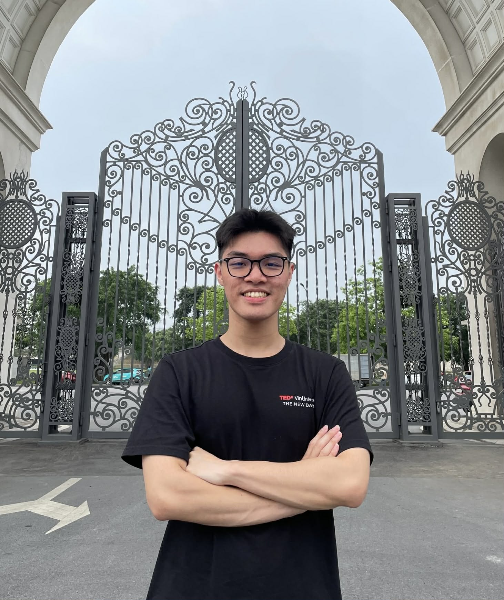

—
—

Hi, I’m Vu Duy Tung — a Cohort 2 CECS student, and this is my transformation journey at VinUniversity. Born and raised in Dong Nai, I took a gamble on a brand-new school. Now, they can’t wait to hear my name at graduation.
A VinUni Journey Through the First View Point
As a final-year student, I’ve started to realize something quietly profound — the places we walk through every day are never just places. They become memories, emotions, and pieces of who we are. Spending my final moments at VinUni, I wanted to create something personal, a reflection of the spaces that shaped my journey. Through this 360° experience, I invite you to walk alongside my memories, as I quietly enjoy these last days and look back on a chapter that has meant more to me than I ever expected.
Use ← → or the story bar to navigate
Fin.
Thanks for walking through my story. There is always another moment being written.